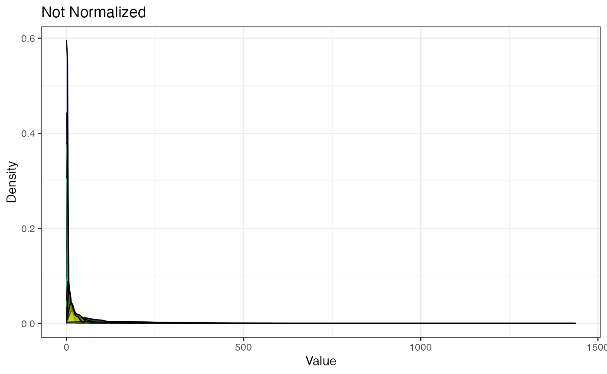
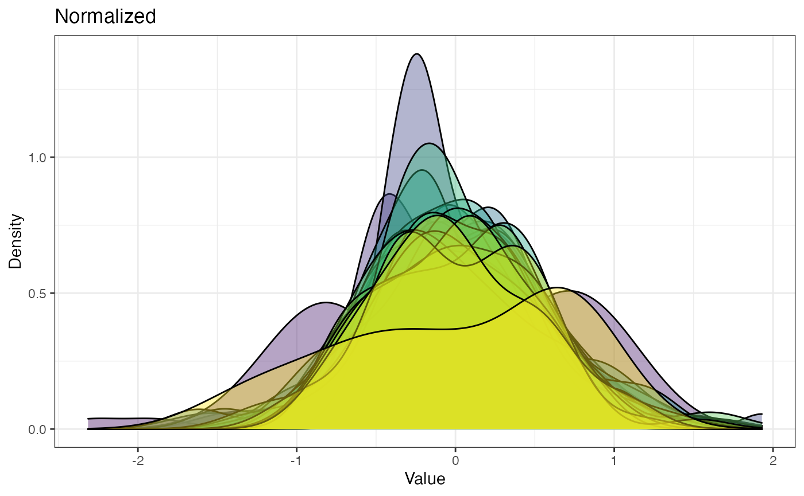
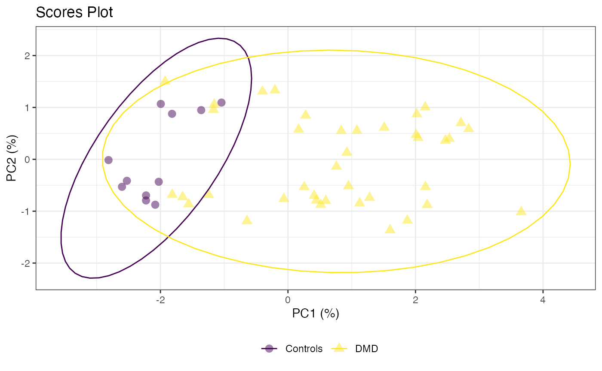
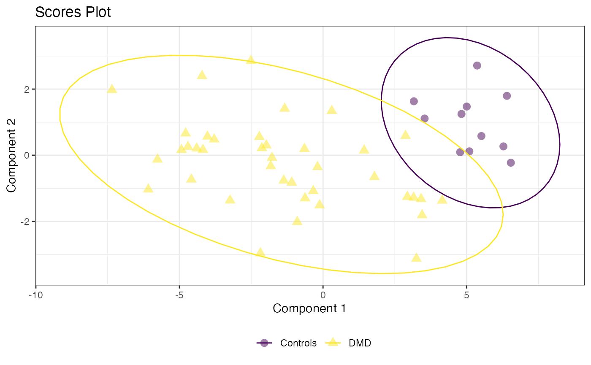
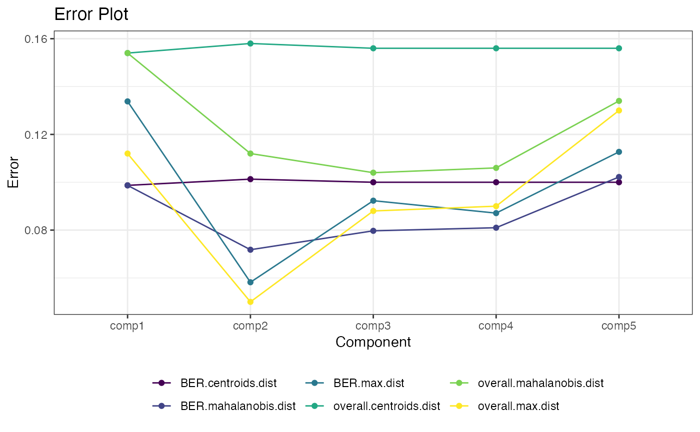

POMA Workflow
Pol Castellano-Escuder
University of Barcelona, Spain.polcaes@gmail.com
27 enero 2021
Source:vignettes/POMA-demo.Rmd
POMA-demo.RmdCompiled date: 2021-01-27
Last edited: 2020-08-03
License: GPL-3
Installation
Run the following code to install the Bioconductor version of package.
# install.packages("BiocManager")
BiocManager::install("POMA")The POMA Workflow
POMA functions can be divided in three sequential well separated blocks: Data Preparation, Pre-processing and Statistical Analysis.
Data Preparation
The MSnbase Bioconductor package provides a well defined computational data structures to represent mass spectrometry (MS) experiment data types (Gatto and Lilley 2012)(Huber et al. 2015). Since data structures can mean a marked improvement in data analysis, POMA functions use MSnSet objects from MSnbase package, allowing the reusability of existing methods for this class and contributing to the improvement of robust and reproducible workflows.
The first step of workflow will be load or create an MSnbase::MSnSet() object. Often, you will have your data stored in separated matrix and/or data frames and you will have to create your own MSnSet object. PomaMSnSetClass function makes this step fast and easy building this MSnSet object from your independent files.
# create an MSnSet object from two separated data frames
target <- readr::read_csv("your_target.csv")
features <- readr::read_csv("your_features.csv")
data <- PomaMSnSetClass(target = target, features = features)Alternatively, if your data is already stored in a MSnSet object, you can skip this step and go directly to the Pre-processing step. In this vignette we will use the example data provided in the package.
# load example data
data("st000336")
st000336
> MSnSet (storageMode: lockedEnvironment)
> assayData: 31 features, 57 samples
> element names: exprs
> protocolData: none
> phenoData
> sampleNames: DMD004.1.U02 DMD005.1.U02 ... DMD173.1.U02 (57 total)
> varLabels: group steroids
> varMetadata: labelDescription
> featureData: none
> experimentData: use 'experimentData(object)'
> Annotation:
> - - - Processing information - - -
> MSnbase version: 2.12.0Brief Description of Example Data
This example data is composed of 57 samples, 31 metabolites, 1 covariate and 2 experimental groups (Controls and DMD) from a targeted LC/MS study.
Duchenne Muscular Dystrophy (DMD) is an X-linked recessive form of muscular dystrophy that affects males via a mutation in the gene for the muscle protein, dystrophin. Progression of the disease results in severe muscle loss, ultimately leading to paralysis and death. Steroid therapy has been a commonly employed method for reducing the severity of symptoms. This study aims to quantify the urine levels of amino acids and organic acids in patients with DMD both with and without steroid treatment. Track the progression of DMD in patients who have provided multiple urine samples.
This data was collected from here.
Pre Processing
This is a critical point in the workflow because all final statistical results will depend on the decisions made here. Again, this block can be divided in 3 steps: Missing Value Imputation, Normalization and Outlier Detection.
Missing Value Imputation
Often, due to biological and technical reasons, some features can not be identified or quantified in some samples in MS (Armitage et al. 2015). POMA offers 7 different imputation methods to deal with this situation. Just run the following line of code to impute your missings!
imputed <- PomaImpute(st000336, ZerosAsNA = TRUE, RemoveNA = TRUE, cutoff = 20, method = "knn")
imputed
> MSnSet (storageMode: lockedEnvironment)
> assayData: 30 features, 57 samples
> element names: exprs
> protocolData: none
> phenoData
> sampleNames: DMD004.1.U02 DMD005.1.U02 ... DMD173.1.U02 (57 total)
> varLabels: Group steroids
> varMetadata: labelDescription
> featureData: none
> experimentData: use 'experimentData(object)'
> Annotation:
> - - - Processing information - - -
> Imputed (knn): Wed Jan 27 16:34:37 2021
> MSnbase version: 2.16.0Note that the object has been updated with imputation information.
Normalization
The next step of this block is the data normalization. Often, some factors can introduce variability in some types of MS data having a critical influence on the final statistical results, making normalization a key step in the workflow (Berg et al. 2006). Again, POMA offers several methods to normalize the data by running just the following line of code:
normalized <- PomaNorm(imputed, method = "log_pareto")
normalized
> MSnSet (storageMode: lockedEnvironment)
> assayData: 30 features, 57 samples
> element names: exprs
> protocolData: none
> phenoData
> sampleNames: DMD004.1.U02 DMD005.1.U02 ... DMD173.1.U02 (57 total)
> varLabels: Group steroids
> varMetadata: labelDescription
> featureData: none
> experimentData: use 'experimentData(object)'
> Annotation:
> - - - Processing information - - -
> Imputed (knn): Wed Jan 27 16:34:37 2021
> Normalised (log_pareto): Wed Jan 27 16:34:37 2021
> MSnbase version: 2.16.0Note that the object has been updated with normalization information.
Normalization effect
Sometimes, you will be interested in how the normalization process affect your data?
To answer this question, POMA offers two exploratory functions, PomaBoxplots and PomaDensity, that can help to understand the normalization process.
PomaBoxplots generates boxplots for all samples or features (depending on the group factor) of an MSnSet object. Here, we can compare objects before and after normalization step.
PomaBoxplots(imputed, group = "samples", jitter = FALSE) +
ggtitle("Not Normalized") +
theme(legend.position = "none") # data before normalization
PomaBoxplots(normalized, group = "samples", jitter = FALSE) +
ggtitle("Normalized") # data after normalizationOn the other hand, PomaDensity shows the distribution of all features before and after the normalization process.
PomaDensity(imputed, group = "features") +
ggtitle("Not Normalized") +
theme(legend.position = "none") # data before normalization
PomaDensity(normalized, group = "features") +
ggtitle("Normalized") # data after normalization
Outlier Detection
Finally, the last step of this block is the Outlier Detection. Outlers are defined as observations that are not concordant with those of the vast majority of the remaining data points. These values can have an enormous influence on the resultant statistical analysis, being a dangerous ground for all required assumptions in the most commonly applied parametric tests in mass spectrometry as well as for all also required assumptions in many regression techniques and predictive modeling approaches. POMA allows the analysis of outliers as well as the possibility to remove them from the analysis using different modulable parameters.
Analyze and remove outliers running the following two lines of code.
PomaOutliers(normalized, do = "analyze")$polygon_plot # to explore
pre_processed <- PomaOutliers(normalized, do = "clean") # to remove outliers
pre_processed
> MSnSet (storageMode: lockedEnvironment)
> assayData: 30 features, 50 samples
> element names: exprs
> protocolData: none
> phenoData
> sampleNames: DMD004.1.U02 DMD005.1.U02 ... DMD173.1.U02 (50 total)
> varLabels: Group steroids
> varMetadata: labelDescription
> featureData: none
> experimentData: use 'experimentData(object)'
> Annotation:
> - - - Processing information - - -
> Imputed (knn): Wed Jan 27 16:34:37 2021
> Normalised (log_pareto): Wed Jan 27 16:34:37 2021
> Outliers removed (euclidean and median): Wed Jan 27 16:34:40 2021
> MSnbase version: 2.16.0Note that the object has been updated with outlier information.
Statistical Analysis
Once the data have been preprocessed, you can start with the statistical analysis block! POMA offers many different statistical methods and possible combinations to compute. However, in this vignette we will comment only some of the most used.
Univariate Analysis
POMA allows you to perform all of the most used univariate statistical methods in MS by using only one function! PomaUnivariate wrap 4 different univariate methods (ttest, ANOVA and ANCOVA, Wilcoxon test and Kruskal-Wallis Rank Sum Test) that you can perform changing only the “method” argument.
T-test
PomaUnivariate(pre_processed, method = "ttest") %>% head()
> mean_Controls mean_DMD Fold_Change_Ratio Difference_Of_Means
> x1_methylhistidine -0.40 0.16 -0.400 0.56
> x3_methylhistidine -0.42 0.19 -0.452 0.61
> alanine -0.32 0.11 -0.344 0.43
> arginine -0.11 0.06 -0.545 0.17
> asparagine -0.35 0.13 -0.371 0.48
> aspartic_acid -0.25 0.09 -0.360 0.34
> pvalue pvalueAdj
> x1_methylhistidine 9.302122e-08 3.100707e-07
> x3_methylhistidine 7.822367e-03 9.025808e-03
> alanine 6.617797e-04 8.631909e-04
> arginine 4.796275e-01 4.796275e-01
> asparagine 1.279748e-05 2.399528e-05
> aspartic_acid 3.302402e-02 3.538287e-02You can also compute a volcano plot using the T-test results. Note that we’re using the non-normalized object to avoid negative values in our data.
Wilcoxon Test
PomaUnivariate(pre_processed, method = "mann") %>% head()
> mean_Controls mean_DMD Fold_Change_Ratio Difference_Of_Means
> x1_methylhistidine -0.40 0.16 -0.400 0.56
> x3_methylhistidine -0.42 0.19 -0.452 0.61
> alanine -0.32 0.11 -0.344 0.43
> arginine -0.11 0.06 -0.545 0.17
> asparagine -0.35 0.13 -0.371 0.48
> aspartic_acid -0.25 0.09 -0.360 0.34
> pvalue pvalueAdj
> x1_methylhistidine 6.206369e-05 0.0001432239
> x3_methylhistidine 9.989212e-03 0.0115260136
> alanine 2.152908e-04 0.0004036702
> arginine 1.400885e-01 0.1449191650
> asparagine 2.468467e-04 0.0004356118
> aspartic_acid 5.709276e-03 0.0068511312Limma
Other of the wide used statistical methods in many different omics, such as epigenomics or transcriptomics, is limma (Ritchie et al. 2015). POMA provides an easy use implementation of limma you only have to specify the desired contrast to compute.
PomaLimma(pre_processed, contrast = "Controls-DMD", adjust = "fdr") %>% head()
> logFC AveExpr t P.Value adj.P.Val B
> tryptophan -0.7749207 0.00862 -7.006568 2.691438e-09 8.074315e-08 10.982005
> valine -0.7009883 0.01268 -6.631334 1.155051e-08 1.732576e-07 9.553920
> ornithine -0.6327809 0.03366 -6.262549 4.794292e-08 4.794292e-07 8.160589
> isoleucine -0.6058485 0.00438 -5.948984 1.591994e-07 1.193995e-06 6.987716
> lactate -0.7853613 0.01840 -5.687122 4.296261e-07 2.577757e-06 6.019252
> pyruvate -0.6244615 0.01208 -5.432256 1.117445e-06 5.135059e-06 5.088552Multivariate Analysis
On the other hand, multivariate analysis implemented in POMA is quite similar to the univariate approaches. PomaMultivariate allows users to compute a PCA, PLS-DA or sPLS-DA by changing only the “method” parameter. This function is based on mixOmics package (Rohart et al. 2017).
Principal Component Analysis
poma_pca <- PomaMultivariate(pre_processed, method = "pca")
poma_pca$scoresplot +
ggtitle("Scores Plot")
PLS-DA
poma_plsda <- PomaMultivariate(pre_processed, method = "plsda")
poma_plsda$scoresplot +
ggtitle("Scores Plot")
poma_plsda$errors_plsda_plot +
ggtitle("Error Plot")
Correlation Analysis
Often, correlation analysis is used to explore and discover relationships and patterns within our data. PomaCorr provides a flexible and easy way to do that providing a table with all pairwise coorelations in the data, a correlogram and a correlation graph.
poma_cor <- PomaCorr(pre_processed, label_size = 8, coeff = 0.6)
poma_cor$correlations %>% head()
> Var1 Var2 corr
> 341 isoleucine leucine 0.9631456
> 642 leucine valine 0.9405392
> 836 fumarate malate 0.9398663
> 641 isoleucine valine 0.9378129
> 545 asparagine threonine 0.9067625
> 558 serine threonine 0.8931187
poma_cor$corrplot
poma_cor$graphAlternatively, if you switch the “corr_type” parameter to “glasso”, this function will compute a Gaussian Graphical Model using the glmnet package (Friedman, Hastie, and Tibshirani 2019).
PomaCorr(pre_processed, corr_type = "glasso", coeff = 0.6)$graphLasso, Ridge and Elasticnet
POMA also provides a function to perform a Lasso, Ridge and Elasticnet regression for binary outcomes in a very intuitive and easy way. PomaLasso is based on glmnet package (Friedman, Hastie, and Tibshirani 2010). This function allows you to create a test subset in your data, evaluate the prediction of your models and export the model computed (it could be useful to perform prediction models with MS data). If “ntest” parameter is set to NULL, PomaLasso will use all observations to create the model (useful for feature selection).
# alpha = 1 for Lasso
PomaLasso(pre_processed, alpha = 1, labels = TRUE)$coefficientPlot
Random Forest
Finally, the random forest algorithm is also implemented in POMA. PomaRandForest uses the randomForest package (Liaw and Wiener 2002) to facilitate the implementation of the algorithm and creates automatically both test and train sets to compute and evaluate the resultant models.
poma_rf <- PomaRandForest(pre_processed, ntest = 10, nvar = 10)
poma_rf$error_tree
Resultant random forest model confusion matrix for test set:
Gini index plot for the top 10 predictors:
poma_rf$gini_plot
Session Information
sessionInfo()
> R version 4.0.2 (2020-06-22)
> Platform: x86_64-apple-darwin17.0 (64-bit)
> Running under: macOS 10.16
>
> Matrix products: default
> BLAS: /Library/Frameworks/R.framework/Versions/4.0/Resources/lib/libRblas.dylib
> LAPACK: /Library/Frameworks/R.framework/Versions/4.0/Resources/lib/libRlapack.dylib
>
> locale:
> [1] es_ES.UTF-8/es_ES.UTF-8/es_ES.UTF-8/C/es_ES.UTF-8/es_ES.UTF-8
>
> attached base packages:
> [1] stats graphics grDevices utils datasets methods base
>
> other attached packages:
> [1] plotly_4.9.2.1 ggraph_2.0.4 ggplot2_3.3.3 POMA_1.0.0
> [5] BiocStyle_2.18.1
>
> loaded via a namespace (and not attached):
> [1] backports_1.2.0 circlize_0.4.11 systemfonts_0.3.2
> [4] plyr_1.8.6 igraph_1.2.6 lazyeval_0.2.2
> [7] splines_4.0.2 gmp_0.6-1 BiocParallel_1.24.1
> [10] digest_0.6.27 foreach_1.5.1 htmltools_0.5.0
> [13] viridis_0.5.1 magrittr_2.0.1 memoise_1.1.0
> [16] cluster_2.1.0 doParallel_1.0.16 limma_3.46.0
> [19] recipes_0.1.15 ComplexHeatmap_2.6.2 graphlayouts_0.7.1
> [22] gower_0.2.2 matrixStats_0.57.0 rARPACK_0.11-0
> [25] pkgdown_1.6.1 colorspace_2.0-0 ggrepel_0.9.0
> [28] textshaping_0.2.1 xfun_0.19 dplyr_1.0.2
> [31] jsonlite_1.7.2 crayon_1.3.4 impute_1.64.0
> [34] survival_3.2-7 iterators_1.0.13 glue_1.4.2
> [37] polyclip_1.10-0 gtable_0.3.0 ipred_0.9-9
> [40] zlibbioc_1.36.0 GetoptLong_1.0.4 RankProd_3.16.0
> [43] shape_1.4.5 Rmpfr_0.8-2 BiocGenerics_0.36.0
> [46] scales_1.1.1 vsn_3.58.0 Rcpp_1.0.5
> [49] mzR_2.24.1 viridisLite_0.3.0 clue_0.3-57
> [52] preprocessCore_1.52.0 clisymbols_1.2.0 stats4_4.0.2
> [55] lava_1.6.8.1 prodlim_2019.11.13 glmnet_4.0-2
> [58] httr_1.4.2 htmlwidgets_1.5.2 RColorBrewer_1.1-2
> [61] ellipsis_0.3.1 pkgconfig_2.0.3 XML_3.99-0.5
> [64] farver_2.0.3 nnet_7.3-14 caret_6.0-86
> [67] labeling_0.4.2 tidyselect_1.1.0 rlang_0.4.10
> [70] reshape2_1.4.4 ggcorrplot_0.1.3 munsell_0.5.0
> [73] tools_4.0.2 generics_0.1.0 broom_0.7.2
> [76] evaluate_0.14 stringr_1.4.0 mzID_1.28.0
> [79] yaml_2.2.1 ragg_0.4.0 ModelMetrics_1.2.2.2
> [82] knitr_1.30 fs_1.5.0 tidygraph_1.2.0
> [85] randomForest_4.6-14 purrr_0.3.4 ncdf4_1.17
> [88] glasso_1.11 nlme_3.1-150 compiler_4.0.2
> [91] rstudioapi_0.13 png_0.1-7 e1071_1.7-4
> [94] affyio_1.60.0 tibble_3.0.4 tweenr_1.0.1
> [97] stringi_1.5.3 RSpectra_0.16-0 desc_1.2.0
> [100] MSnbase_2.16.0 lattice_0.20-41 ProtGenerics_1.22.0
> [103] Matrix_1.2-18 permute_0.9-5 vegan_2.5-7
> [106] vctrs_0.3.6 pillar_1.4.7 lifecycle_0.2.0
> [109] BiocManager_1.30.10 MALDIquant_1.19.3 GlobalOptions_0.1.2
> [112] data.table_1.13.6 corpcor_1.6.9 patchwork_1.1.0
> [115] R6_2.5.0 pcaMethods_1.82.0 affy_1.68.0
> [118] bookdown_0.21 gridExtra_2.3 IRanges_2.24.0
> [121] codetools_0.2-18 MASS_7.3-53 assertthat_0.2.1
> [124] rprojroot_2.0.2 rjson_0.2.20 withr_2.3.0
> [127] S4Vectors_0.28.0 mgcv_1.8-33 parallel_4.0.2
> [130] mixOmics_6.14.0 grid_4.0.2 rpart_4.1-15
> [133] timeDate_3043.102 tidyr_1.1.2 class_7.3-17
> [136] rmarkdown_2.5 Cairo_1.5-12.2 ggforce_0.3.2
> [139] pROC_1.16.2 Biobase_2.50.0 lubridate_1.7.9.2
> [142] ellipse_0.4.2References
Armitage, Emily Grace, Joanna Godzien, Vanesa Alonso-Herranz, Ángeles López-Gonzálvez, and Coral Barbas. 2015. “Missing Value Imputation Strategies for Metabolomics Data.” Electrophoresis 36 (24): 3050–60.
Berg, Robert A van den, Huub CJ Hoefsloot, Johan A Westerhuis, Age K Smilde, and Mariët J van der Werf. 2006. “Centering, Scaling, and Transformations: Improving the Biological Information Content of Metabolomics Data.” BMC Genomics 7 (1): 142.
Friedman, Jerome, Trevor Hastie, and Rob Tibshirani. 2019. Glasso: Graphical Lasso: Estimation of Gaussian Graphical Models. https://CRAN.R-project.org/package=glasso.
Friedman, Jerome, Trevor Hastie, and Robert Tibshirani. 2010. “Regularization Paths for Generalized Linear Models via Coordinate Descent.” Journal of Statistical Software 33 (1): 1–22. http://www.jstatsoft.org/v33/i01/.
Gatto, Laurent, and Kathryn Lilley. 2012. “MSnbase - an R/Bioconductor Package for Isobaric Tagged Mass Spectrometry Data Visualization, Processing and Quantitation.” Bioinformatics 28: 288–89.
Huber, W., V. J. Carey, R. Gentleman, S. Anders, M. Carlson, B. S. Carvalho, H. C. Bravo, et al. 2015. “Orchestrating High-Throughput Genomic Analysis with Bioconductor.” Nature Methods 12 (2): 115–21. http://www.nature.com/nmeth/journal/v12/n2/full/nmeth.3252.html.
Liaw, Andy, and Matthew Wiener. 2002. “Classification and Regression by randomForest.” R News 2 (3): 18–22. https://CRAN.R-project.org/doc/Rnews/.
Ritchie, Matthew E, Belinda Phipson, Di Wu, Yifang Hu, Charity W Law, Wei Shi, and Gordon K Smyth. 2015. “limma Powers Differential Expression Analyses for RNA-Sequencing and Microarray Studies.” Nucleic Acids Research 43 (7): e47. https://doi.org/10.1093/nar/gkv007.
Rohart, Florian, Benoît Gautier, Amrit Singh, and Kim-Anh Lê Cao. 2017. “MixOmics: An R Package for ’Omics Feature Selection and Multiple Data Integration.” PLoS Computational Biology 13 (11): e1005752. http://www.mixOmics.org.